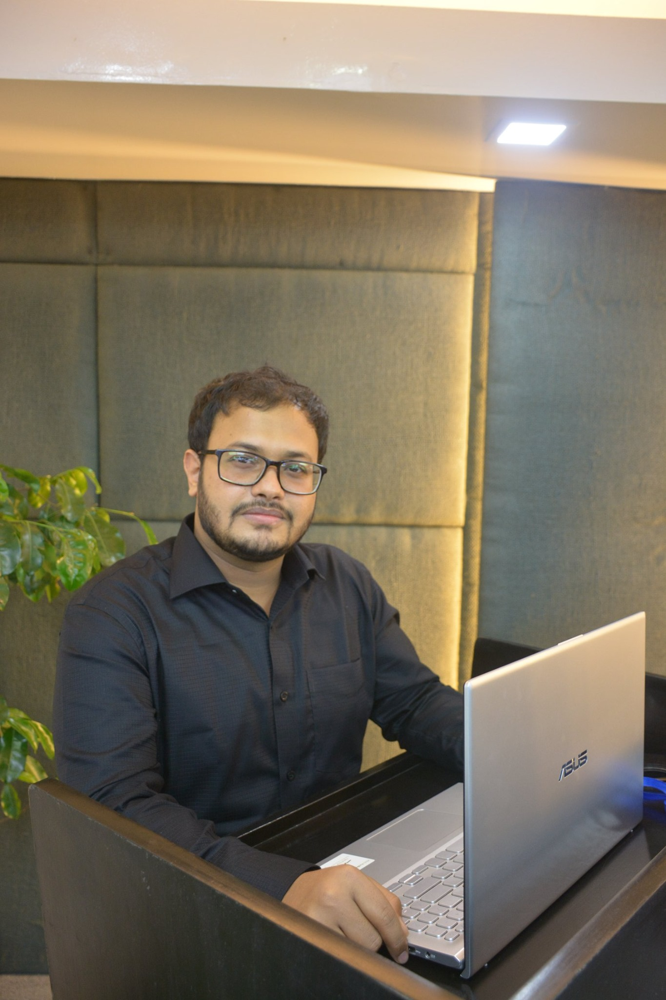

I'm 03 years experienced Machine Learning Engineer focused on Computer Vision and Natural Language Processing. I am working on NLP and Computer Vision-based project that aim to simplify complex real-life problems. Recently I've co-authored a scientific paper that proposed a solution to aid the visually impaired people using different computer vision and IoT technologies. During undergraduate years, i participated different voluntary works across the country and lead two technical student communities in my campus.
